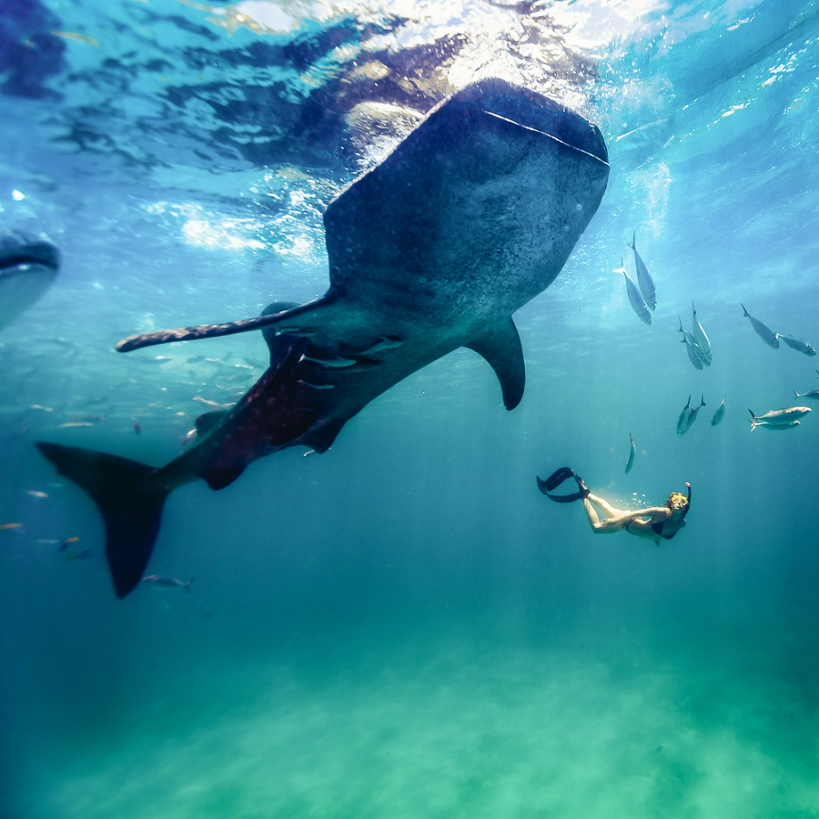
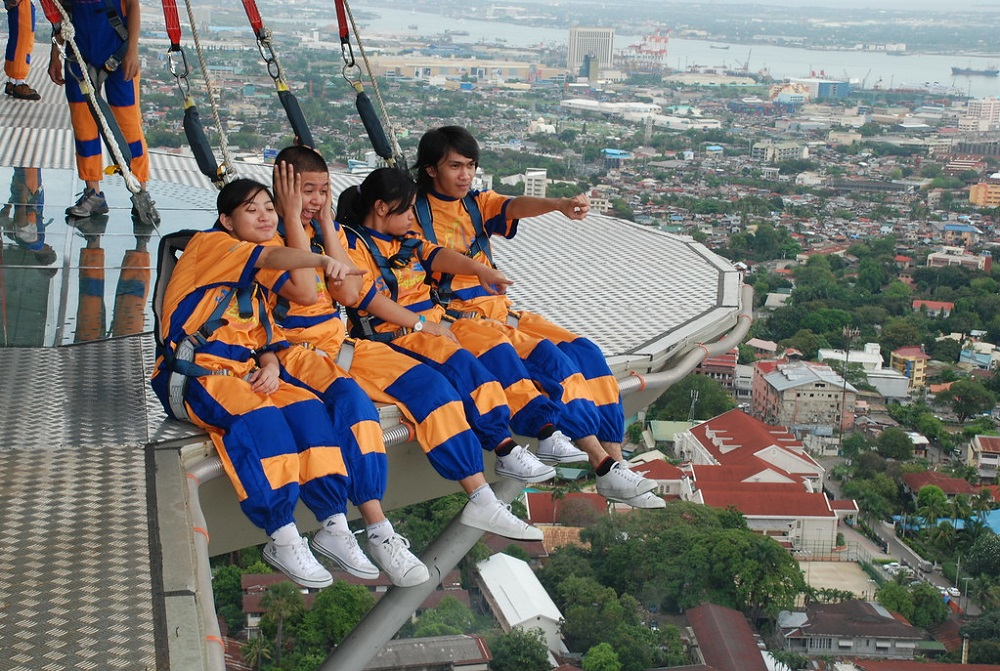
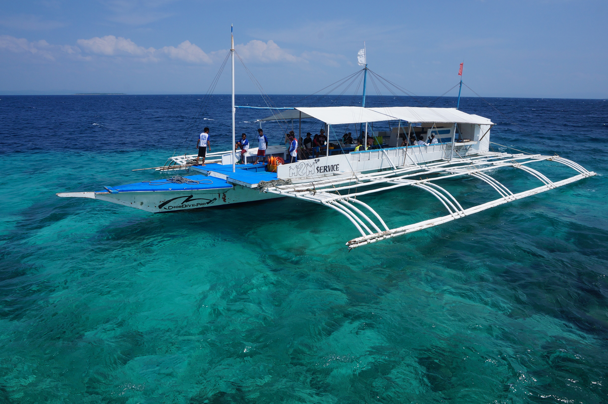
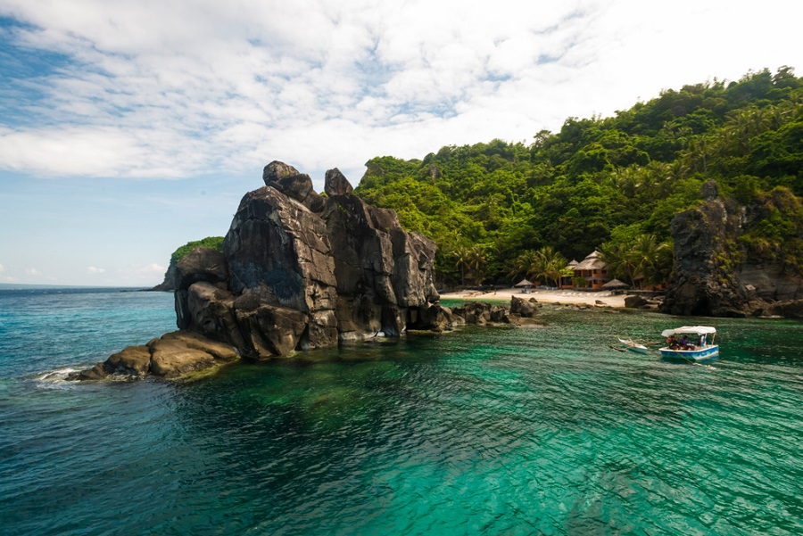
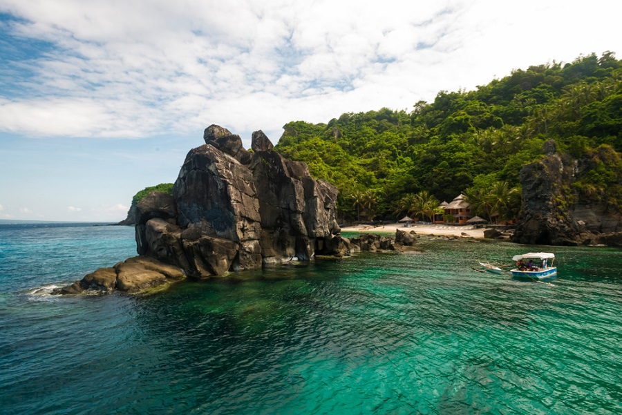
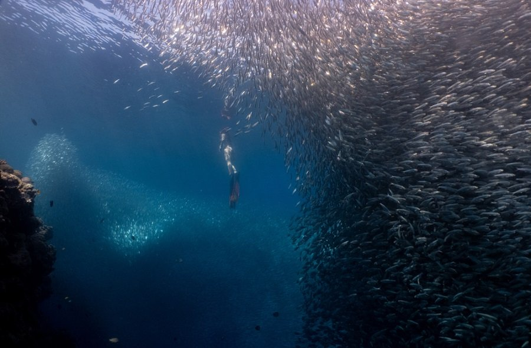
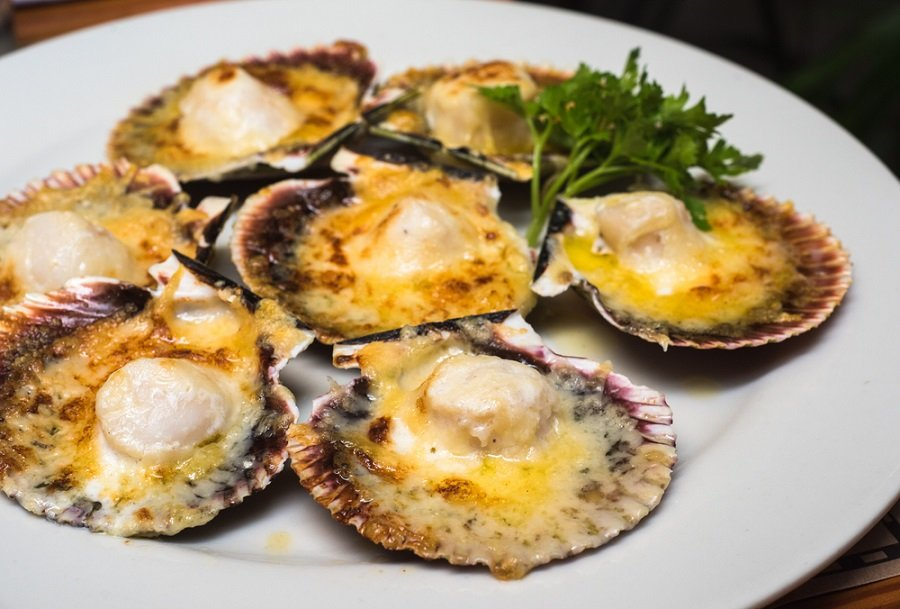
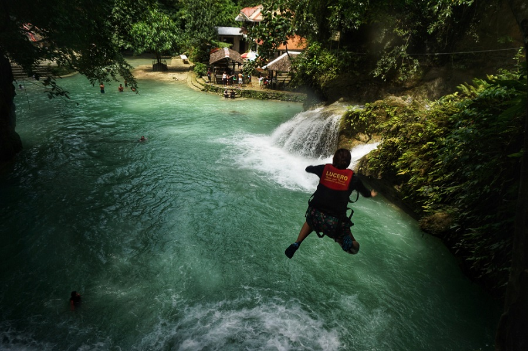

Cebu Itinerary:
Ultimate Travel Guide
Cebu doesn’t disappoint as a travel destination for your well-deserved breaks. With its city-meets-nature vibes, the Queen City of the South is a clear standout as it has something for every traveler. The things to do in Cebu surely offer nothing but fun and one of a kind experience for its visitors whether they want to relax, party, or appreciate and become one with nature.
I always wonder why birds choose to stay in the same place when they can fly anywhere on earth, then I ask myself the same question.

- Island-hopping
- Scuba diving/snorkeling
- Food tripping
- Canyoneering
- Swimming with whale sharks
-
Oslob is one of the most famous Cebu attractions because of the butanding or whale sharks. There you can swim and get up close with the whale sharks! Just make sure you listen to the orientation prior to the activity and follow all the rules to protect the endangered species.

- Sky Experience Adventure
If you’re looking for another thrilling adventure that doesn’t involve water, then try the Sky Experience Adventure! Here you can get a Skywalk experience and take a ride on their Edge Coaster that goes around the building 126 meters above the ground. In about 10 to 15 minutes, you’ll experience walking around the glass floor panels and get a view of the city right beneath your feet. This is definitely one of the must-try things to do in Cebu City.



Whether you stay in the city proper, North Cebu, South Cebu, or any other Cebu island nearby, there’s always an island-hopping day trip at hand from where you are! Because in a province that has over 160 islands, a day of island hopping is one of the most popular things to do in Cebu City.

If you’re in for another wild adventure, go snorkeling or scuba diving! Moalboal is the best tourist spot in Cebu when it comes to scuba diving and also one of the best diving spots in the Philippines. The best thing about scuba diving in Moalboal is that you’ll get to swim with millions of sardines.

If there’s one place in the Philippines that serves the freshest seafood, it’s Cebu! Feast on and fill your tummies with Cheesy Baked Scallops that are freshly caught from the sea. Here’s a tip, you can eat delicious cheesy baked scallops all you can at Big Jel’s Restuarant in Bantayan Island at a very affordable price. You can also buy a 100-kilo of scallops for just PHP75 to PHP100!

Canyoneering is one of the most thrilling and exciting things to do in Cebu. It has become very popular because of Kawasan Falls’ beauty! In fact, some tourists would rather go south than tour the city just to experience canyoneering. The prime spot for canyoneering in Cebu is Kawasan Falls in Badian town. Professional tour guides are available to help you with this thrilling activity.
